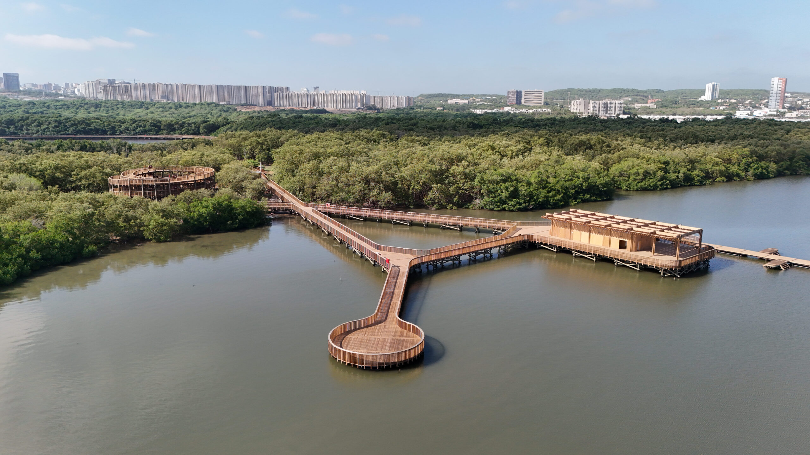
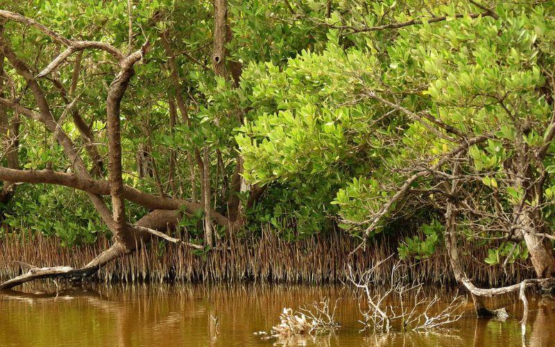

La Ciénaga de Mallorquín es un ecosistema de humedal costero de gran importancia ecológica ubicado en el norte de Barranquilla. Este valioso ecosistema de manglar es hogar de más de 150 especies de aves, 36-42 especies de peces, y múltiples especies de flora que cumplen funciones vitales para la región.


Navega por la ciénaga con nuestro mapa interactivo y ubícate en tiempo real usando GPS.
Ayúdanos a cuidar el ecosistema reportando problemas ambientales o de infraestructura.
Descubre las especies de fauna y flora que habitan este importante humedal.
💡 Recomendación: Para una mejor experiencia y menor exposición solar, considera visitar antes de las 9:00 AM o después de las 2:00 PM en días entre semana.
La Ciénaga de Mallorquín alberga una extraordinaria biodiversidad. El ecosistema de manglar, aunque ha sufrido degradación por salinización, contaminación y urbanización, está siendo objeto de importantes proyectos de restauración con siembras de decenas de miles de plantas.
Nota importante: La ciénaga registra 9 especies de aves amenazadas y el ecosistema de manglar es prioritario para conservación debido a su función como área de alimentación, paso y crianza para múltiples especies.